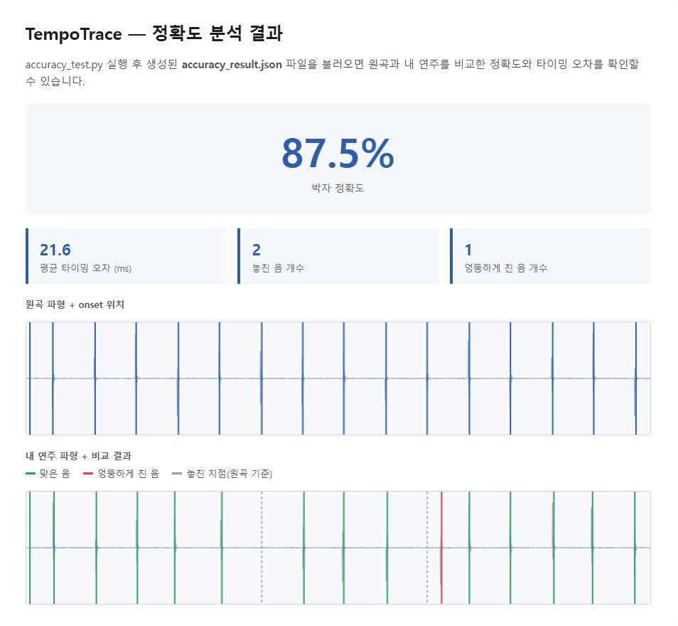

- 스마트폰 녹음 앱으로 실제 기타 연주 녹음 → onset detection 테스트
- 원곡 vs 연주 비교 정확도(%) 계산 로직 실제 구현
- 결과를 웹페이지에서 확인할 수 있도록 연결
3주차에 설계했던 방식을 그대로 코드(accuracy_test.py)로 옮겼습니다.
| 1단계 | 원곡과 내 연주 각각에서 librosa로 onset(소리 시작 지점) 시각 리스트 추출 |
|---|---|
| 2단계 | 원곡의 각 onset마다 내 연주에서 가장 가까운 시각을 찾아 시간차 계산 |
| 3단계 | 시간차가 허용 오차(150ms) 이내면 "맞음"으로 판정 |
| 4단계 | 정확도(%) = 맞은 개수 ÷ 원곡 onset 총개수 × 100 |
실제 오디오 없이, 정답을 미리 아는 가상의 타이밍 데이터로 매칭 로직만 따로 테스트했습니다.
테스트용 원곡·연주 음원 파일을 만들어 실제로 스크립트를 돌려본 결과입니다.

FileNotFoundError 발생
해결: 스크립트 자신의 위치(__file__)를 기준으로 경로를 고정하도록 수정
plt.subplots_adjust(hspace=0.5)로 간격 조정
webbrowser 모듈로 스크립트 실행과 동시에 브라우저가 자동으로 열리도록 개선